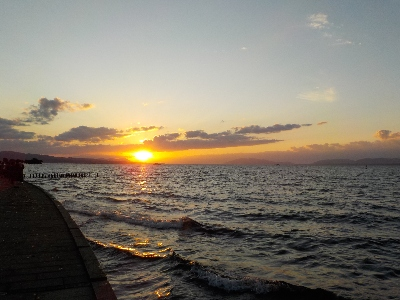

天気が良かったので、ふらっと宍道湖の夕日を見に行きました。
更新日 : 2025/11/23

家でのんびりしてたんですが、ずっと家にいるにはもったいないくらいいい天気だと思い出かけました。
雲が少しあったんですが、夕日が見れて良かった。

これは丁度1年前の同じ日の夕方に撮影した写真です。たまたま1年前も同じ場所で写真を撮っていました。

2024年の3月に撮影した写真です。

2023年9月に撮影した写真です。凄く眩しかったの覚えています。
海に行ってもキレイな夕日が見れるとは思うんですが、宍道湖に来ちゃいますね。島根県立美術館があるのが一番の理由だな。
美術館に大きい駐車場あるし、曇っても美術館行けるし、暑くても寒くても美術館で休憩できるのはいいですね。